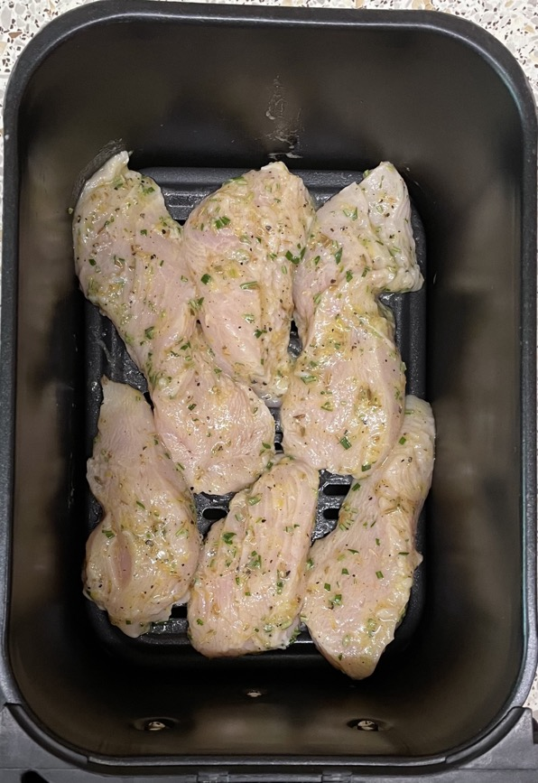
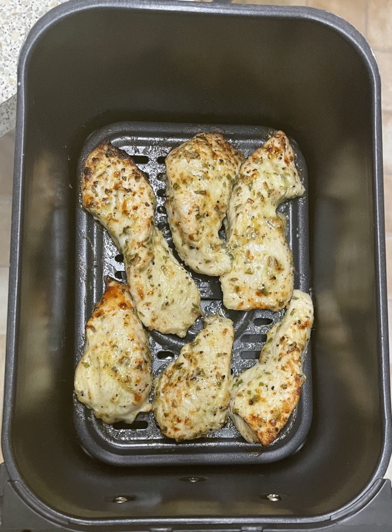
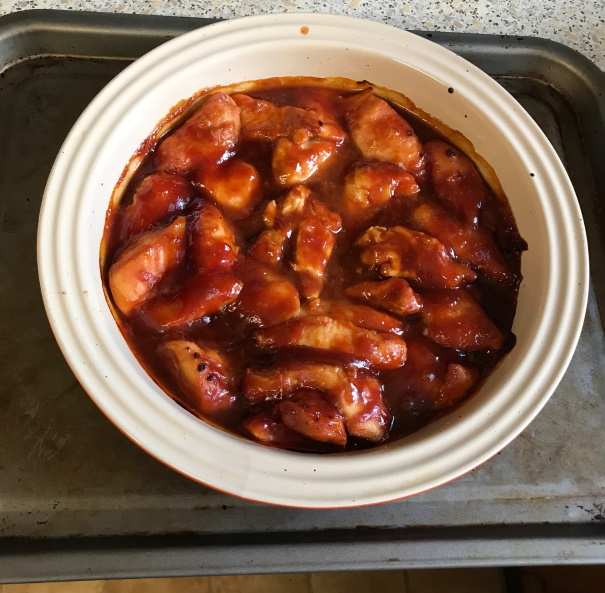

Chicken
Recipes
Notes
- Salt / brine chicken 1-3 hours before cooking
- Cook to 65°C then rest
- Don't marinate in acids because meat will lose more moisture after cooking
- Freezing damages cell structure and can cause interior juices to leak out. If packaging has lots of
juices then probably because meat was frozen
Pan-fried chicken breasts
- Trim chicken breasts
- Season on both sides
- Heat frying pan with olive oil
- Once oil is hot heat chicken breasts on one side for 5 mins
- Add knob of butter
- Turn chicken breasts and baste in butter for 2 mins
- Roast in air fryer at 180°C for 10-15 mins until 68°C inside
- Rest for 5 mins before serving
Chicken cutlets
- Slice chicken breasts into two horizontally (don't saw)
- Place each chicken slice between cling film and bash with pan bottom until 6-7mm thick
- Season cutlets with salt and pepper
- Coat in plain flour shaking off excess
- Add 1½ tbsp vegetable oil to 30cm pan
- Heat over high-heat until smoking
- Add cutlets and cook without moving for 2½ mins until browned on bottom
- Flip and cook for 3 mins
- Transfer to plate and cover to rest
Chicken in ham
- Wrap chicken breast in Prosciutto ham then lightly brush with oil
- Spread thin layer of pesto on top and cover that with panko breadcrumbs
- Roast in air fryer at 190°C for 15-20 mins? until 68°C
- Rest for 5 mins before serving
Roast whole chicken
- Stuffing: 170g, 12 balls, 200°C for 25 mins
- Insert into chicken
- Lemon pricked all over with knife and heated in microwave
- 2 sticks celery chopped
- Slabs of butter 1 inside, 1 under skin at front
- 20 mins + 20 mins for each 450g
- Cook at 180°C uncovered
- Medium 1.5kg, 1h 20m, 4 portions & leftovers
- 75°C in meat when done
- Baste before resting
- Cover with foil and rest for 30 mins
Roast chicken pieces
- 400g chicken breast cut into similar sized pieces
- Marinate 2-6 hours
- Allow to reach room temperature then cook
- Roast in air fryer at 180°C for 8-10 mins until 68°C
Honey & ginger
- Marinate and cook
- 20g honey
- 10g ginger
- 7g soy sauce
- 7g sake / shaohxin wine
Spanish style
- Marinate and cook
- 3 tbsp olive oil
- 2 tsp sherry vinegar (or rice / red wine / white wine vinegar)
- 2 cloves garlic
- 1 tsp thyme
- 1 tsp sweet smoked paprika
- 1 tsp ground cumin
- 1 tsp ground coriander
Tikka
- Marinate and cook
- 75g greek yogurt
- 25g ginger
- 2 cloves garlic minced
- 1 tbsp lemon juice
- 1 tbsp curry powder
- 1 tsp ground cumin
- 1 tsp ground turmeric
- 1 tsp mild chilli powder
- ½ tsp salt
Tikka - ready mixed
- Amounts for 2 chicken breasts
- Marinate and cook
- 70g greek yogurt
- 1 tsp light muscovado sugar
- sprinkle Geeta's tikka marinade
Honey & mustard
- Coat and cook
- 1½ tbsp honey
- ½ tbsp olive oil
- 2 tsp whole grain mustard
- 2 tsp lemon juice
- rosemary chopped
- pinch sugar
Italian
- Coat and cook
- 4 tbsp olive oil
- 2 tbsp lemon juice
- 30g parmesan grated (new)
- 1 tbsp fresh rosemary chopped
- zest of ½ lemon grated
- ¼ tsp salt
- ¼ tsp black pepper


Teriyaki
Nando's
Barbeque
- Newman's Own Sticky BBQ Marinade
Chicken in sauce
- Newman's Own Sticky BBQ sauce and 3 chicken breasts, 200°C for 27 mins
